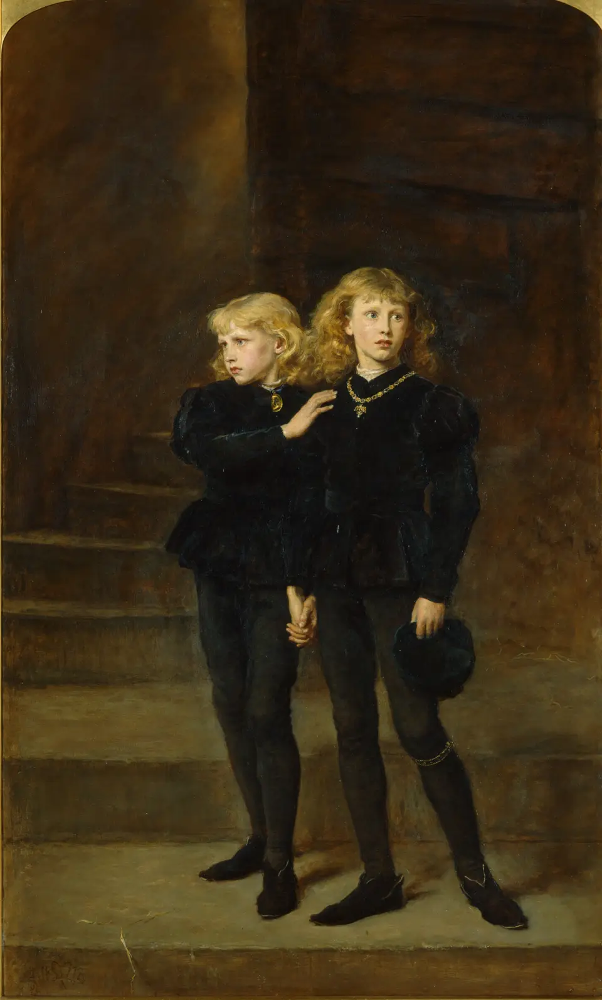
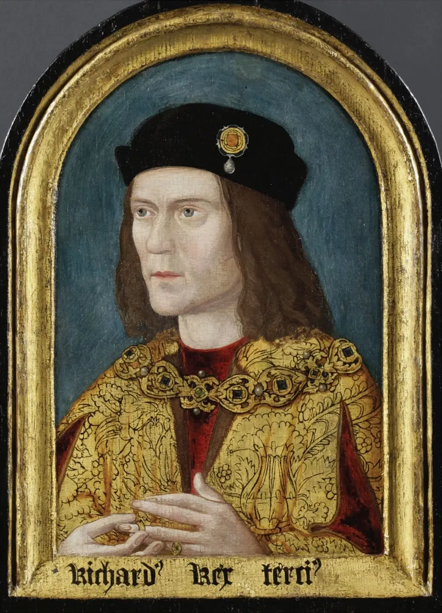
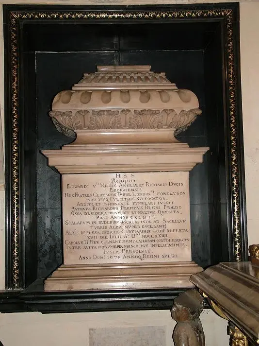

Hai hoàng tử biến mất trong Tháp London
Mùa hè năm 1483, hai cậu bé 12 và 9 tuổi còn được thấy chơi trong sân Tháp London. Sau đó không ai ghi lại lần nào thấy họ nữa.

Ngày 17 tháng 7 năm 1674, thợ sửa chữa Tháp London đào sâu khoảng 3 m dưới cầu thang dẫn lên nhà nguyện của Tháp Trắng và tìm thấy một chiếc hòm gỗ. Bên trong là hai bộ xương trẻ em. Người ta tin ngay đó là hai hoàng tử mất tích gần 200 năm trước. Bốn năm sau, vua Charles II cho đặt xương vào một chiếc bình và chôn trong Tu viện Westminster. Đến nay, không ai chứng minh được đó là ai.
Một vị vua chưa kịp đăng quang
Ngày 9 tháng 4 năm 1483, vua Edward IV qua đời sau khoảng ba tuần bệnh. Con trai cả của ông, 12 tuổi, thành vua Edward V. Ngày 30 tháng 4, chú của cậu là Richard, công tước xứ Gloucester, bắt giữ đoàn tùy tùng của nhà vua nhỏ ở Stony Stratford, trong đó có cậu ruột Anthony Woodville và anh cùng mẹ Richard Grey. Cả hai bị chém đầu ngày 25 tháng 6.
Ngày 19 tháng 5, Edward V được đưa vào Tháp London, theo lệ là nơi vua ở trước lễ đăng quang. Ngày 16 tháng 6, em trai cậu, Richard, công tước xứ York, 9 tuổi, đang lánh trong khu tị nạn của nhà thờ, cũng được đưa vào ở cùng. Lễ đăng quang bị hoãn vô thời hạn.
Ngày 22 tháng 6, một bài giảng ở St Paul's Cross tuyên bố Gloucester là người thừa kế hợp pháp duy nhất. Lập luận là cuộc hôn nhân của Edward IV với Elizabeth Woodville vô hiệu, vì trước đó vua đã hứa hôn với Eleanor Talbot, nên các con của bà là con ngoài giá thú. Ngày 6 tháng 7, Gloucester đăng quang thành vua Richard III. Năm 1484, Quốc hội xác nhận điều này bằng đạo luật Titulus Regius. Còn hai cậu bé trong tháp thì dần biến khỏi tầm mắt mọi người.
Sử sách chép gì


Chỉ có một lời kể đương thời: của Dominic Mancini, một tu sĩ người Ý có mặt ở London mùa xuân và hè năm 1483, viết trước tháng 11 năm ấy. Mancini kể hai cậu bé bị đưa vào các phòng phía trong của tháp, được thấy ngày càng ít, rồi biến mất hẳn. Ông kể một bác sĩ thường đến thăm Edward V, và cậu bé ngày nào cũng xưng tội, vì tin rằng cái chết đang đến gần. Bản thảo của Mancini nằm quên trong thư viện thành phố Lille cho đến năm 1934.
Các nguồn khác viết muộn hơn. Biên niên sử Croyland viết sau khoảng ba năm, hồi ký của Philippe de Commines sau khoảng 17 năm, đều sau khi Richard III chết. Khoảng năm 1513, Thomas More, người lớn lên trong nhà một đối thủ của Richard, viết rằng hiệp sĩ James Tyrrell giết hai hoàng tử theo lệnh vua, và đã thú tội trước khi bị xử tử năm 1502. Không có văn bản thú tội nào còn lại. Sách của More và biên niên sử Holinshed là nguồn chính cho vở kịch Richard III của Shakespeare.
Ngoài sự biến mất, không có bằng chứng trực tiếp nào về một vụ giết người. Richard III là nghi phạm hàng đầu vì hai cậu bé ở trong tháp do người của ông canh giữ. Các giả thuyết khác nhắm vào công tước Buckingham, cánh tay phải của Richard, bị xử tử tháng 11 năm 1483, hoặc Henry VII, người lên ngôi năm 1485. Henry ở nước ngoài suốt từ khi hai hoàng tử biến mất đến tháng 8 năm 1485, nên chỉ có thể dính líu nếu họ còn sống đến lúc đó. Manh mối duy nhất có thể chạm tay vào chỉ lộ ra gần 200 năm sau.
Cuộc khám bị phê bình vì mặc định đó là hai hoàng tử, và không ai thử xác định giới tính.
Những bộ xương dưới cầu thang


Năm 1933, xương trong bình được mở ra cho nhà lưu trữ Lawrence Tanner, nhà giải phẫu William Wright và nha sĩ George Northcroft khám. Họ kết luận đó là hai trẻ em ở độ tuổi phù hợp. Nhưng xương bị chôn lẫn với xương gà và xương thú, kèm ba chiếc đinh gỉ; nhiều mảnh bị thợ năm 1674 làm gãy. Cuộc khám bị phê bình vì mặc định đó là hai hoàng tử, và không ai thử xác định giới tính. Cầu thang nơi tìm thấy xương cũng chưa được xây vào thời Richard III.
Từ đó đến nay, xương chưa được xét nghiệm lại, kể cả ADN. Năm 2013, một bản kiến nghị trực tuyến đòi xét nghiệm bị đóng sớm. Sử gia A. J. Pollard nhắc rằng kể cả khi chứng minh được đó là hai hoàng tử, ADN cũng không cho biết ai đã giết họ. Ngay từ thế kỷ 15, đã có người khẳng định hoàng tử chưa hề chết.
Chi tiết bên lề: hai "hoàng tử" trở về
Dưới triều Henry VII có hai người tự xưng là hoàng tử thoát chết. Lambert Simnel được đội vương miện ở Dublin với danh hiệu "Edward VI". Perkin Warbeck xưng là Richard, công tước xứ York, và gọi mình là "Richard IV". Năm 2021, nhóm Missing Princes Project của Philippa Langley còn cho rằng Edward V đã sống ở làng Coldridge, Devon, dưới tên John Evans. Các giả thuyết này đến nay vẫn chỉ là giả thuyết.
Dư âm đến hôm nay
Dù có tự tay ra lệnh hay không, Richard III đã gánh tội trong mắt người đương thời, vì ông là người phế truất và giam giữ hai cậu bé. Cuộc tranh cãi được nuôi tiếp bởi vở kịch của Shakespeare, các phim tài liệu năm 2023 trên Channel 4 và PBS, và cả tiểu thuyết A Clash of Kings của George R. R. Martin. Tại Westminster, tấm bia do Christopher Wren thiết kế vẫn ghi bằng tiếng Latin rằng đây là hài cốt của Edward V và em trai.
Hai hoàng tử biến mất là có thật. Ai giết họ, và họ có bị giết hay không, đến nay chưa có bằng chứng nào trả lời được.